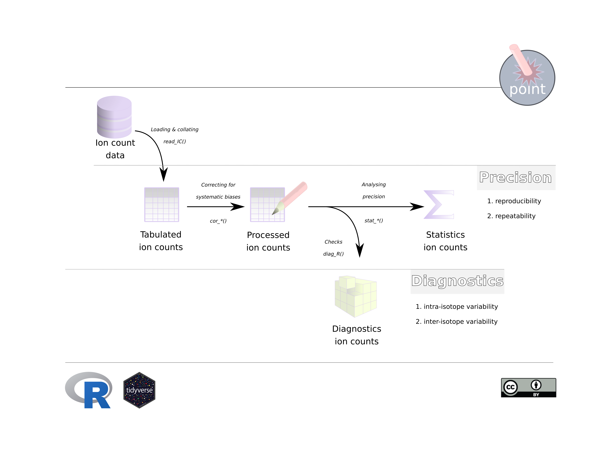

IC-introduction.RmdThe large imprecision in secondary ion generation during Secondary Ion Mass Spectrometry (SIMS) analyses, and associated registration of ion counts with the detection devices, requires the generation of large quantities of data in order to suppress the uncertainty associated with the final output value. This would be the case either with single ion abundances or isotope ratios, and causes the accumulation of large datasets and numerous files. Additional meta-data files record machine-specific settings, e.g., regarding the optics, beam stability and mass spectrometer of, e.g., a Cameca NanoSIMS 50L (Slodzian et al. 1992) for my studies, that vary depending on the type of analyses or environmental conditions. And, although, the default software of the instrument (e.g. CamecaTM software (Cameca)) can do all of this data accumulation and transformation, there are certain benefits in getting more control on those actions, which are hidden away in the code of the commercial software. Foremost, it enables controlling ion count corrections related to systematic biases which are linked to the detection systems. Furthermore, more control on the data analysis allows sub-setting or collating of analyses to calculate either internal or external precision of the study. Perhaps the most powerful aspect of the greater freedom associated with the usage of point is the performance of diagnostics that evaluate the internal consistency of the ion count ratios. These diagnostics can inform about factors that are normally not easily detectable, such as, heterogeneity of the sampled surface or instability of the instrument during individual runs. All of these features are in discussed in detail in the accompanying vignettes, whereas this vignette will only delve into the basics of the work-flow.
Concise terminology is required when discussing pulsed ion count data to prevent ambiguity surrounding for instance the usage of terms such as the analytical substrate (the rock or biological sample), machine set-up and instrument performance as well as conventions associated with statistics. It would become easy to mix-up terms, as, for instance, sample can refer to the physical sample analysed during a study, but sample can also relate to the set of individual objects collected during a statistical analysis, as such we refer henceforward to analytical substrate when discussing the former. The levels at which ion counts are detected and accumulated during a study can be another source of confusion, where we have the single instance of an ion hitting the detector, or the event. However, in order to get an idea of the abundance of a certain chemical species, we need of course a suite of these events which then together constitute a single measurement. So, the measurement (\(N_i\)) would the minimal level at which the machine starts recording and generating data output. Due to the fundamental imprecision of pulsed ion count measurements, it is necessary to record a whole collection, or series, of these measurements in order to limit the uncertainty surrounding our abundance estimate of the chemical species. In other words, we want to know how well our sample (i.e., the statistical sample) approximates the true population mean (\(\mu\)). This accumulation of measurements, or \(n\)-series of measurements, is then collectively referred to as an analysis (or \(N_{(i)} = M_j\)). A study, on for instance the carbon isotope composition of a carbonate rock, would not only rely on one such analysis, but would compare a suite of analyses across its surface, or even between different specimens. This is then referred to as a study, or \(m\)-series of analyses \(M_{(j)}\).
To summarise:
This terminology has been used throughout the documentation of the package point, and the above summary has been included in each of the vignettes for convenience.
library(point) # load packageThe most basic work-flow consists of three steps:
read_IC().cor_IC().stat_X() for single ions and stat_R() for isotope ratios.point package, and is contained in the function diag_R()
The following publication is a prove of concept concerning the methods behind the diag_R() function:
Martin Schobben, Michiel Kienhuis, and Lubos Polerecky. 2021. New methods to detect isotopic heterogeneity with Secondary Ion Mass Spectrometry, preprint on Eartharxiv.

For more detailed information:
IC-read: reading raw ion count data use
IC-process: processing ion count data
IC-precision: statistics concerning ion count precision
IC-diagnostics: diagnostics on internal variation